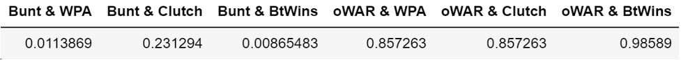

Did COVID Bring Small-ball Back to Life?
By Jack Troyan | November 29, 2020

Due to the COVID-19 pandemic, Major League Baseball instituted several new rules in order for its 60-game season to be played while keeping its players healthy. Probably the most dramatic of these rules was starting all extra-innings with a runner on second base with no outs, automatically putting the offense in a more advantageous position to break the tie and decide a game. This begs the question whether or not this rule reintroduces the effectiveness of bunting into the game, as the automatic old-school philosophy would almost mandate a bunt with no outs and a runner on second in a pressure situation.
In this table, we look at several correlations between bunting and baserunning statistics. While there is a slight correlation between a team’s successful bunt percentage and advancing a runner on 2nd with no outs, there are no strong positive correlations between advancing a runner from 2nd with no outs and scoring a runner from 3rd with less than 2 outs. So bunting a runner to 3rd with 0 outs doesn’t necessarily dictate that runner scoring. In fact, the correlation between a team’s bunt percentage and its percentage of scoring a runner from 3rd with less than 2 outs is slightly negative. Thus bunting still is not the surefire way to go even with this new rule, and still does not have a significant enough impact on the game to increase a team’s runs, thereby its chances of winning.
Here, we see that a correlation between a team’s successful bunting percentage does not have a significant impact on a team’s average player’s value. A team with a higher successful bunting percentage does not correlate with an increase or decrease in its average player’s WPA or their total contributions to the team's wins with his bat (BtWins). Something to note however, though somewhat negligible, there is a positive correlation between a team’s bunt percentage and its average player’s clutch value, which estimates difference between context-dependent WPA and context neutral WPA. This creates a question as to whether bunting becomes more valuable in more high leverage situations.
When we examine correlations between a team’s successful bunt percentage and a team’s situational win percentages, specifically a team’s win percentages in games decided by one run and extra-inning games, we see that they are negatively correlated. What’s more, the absolute values of these negative correlations are greater than the positive correlations between a team’s bunt percentage and its average Clutch per player. However, when we examine the correlations between a team’s situational win percentages and it’s average player’s WAR, the correlations are negligible. Therefore, while a team’s bunting percentage overall may not correlate to situational wins that are created by MLB’s new extra innings rule, some other factor might determine this other than just how good a team is. This could lie in more specific bunting or small ball statistics, such as extra-inning or late game numbers. Or, strong correlations between wins in these new extra inning situations may be found in pitching, rather than hitting strategies.